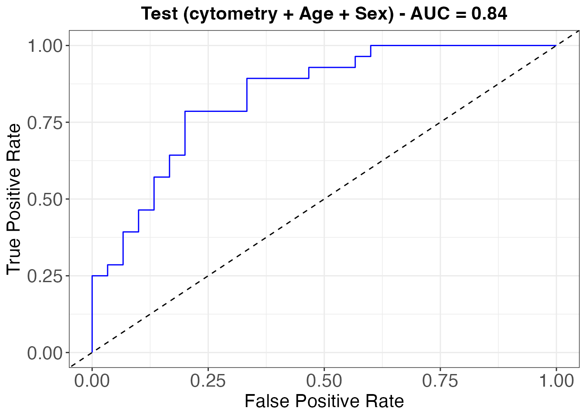

Adding clinical covariates to the dioscRi model
Elijah Willie
2026-05-21
Source:vignettes/dioscRi_with_clinical.Rmd
dioscRi_with_clinical.RmdWhen to use this workflow
The overlapping group lasso in dioscRi accommodates additional
non-cytometry covariates (age, sex, lab values, etc.) by appending them
to the scaled design matrix and adding a corresponding group to the
group structure. On the BioHEART-CT validation cohort, the published
model that combines cytometry features with age and sex reaches
AUC = 0.87, up from 0.83 with cytometry alone
(main.tex Discussion paragraph at L546).
This vignette starts from the cached SCE objects produced by the introduction vignette; render that one first to populate the cache.
The chunks below reuse the cache and run end-to-end.
Re-derive features from the cached SCEs
The intro vignette saves the post-VAE SCEs along with their cluster labels. We can recompute the proportion + marker-mean features quickly.
prop_logit_train <- computeFeatures(sce_train, featureType = "prop",
cellTypeCol = "clusters_norm",
sampleCol = "sample_id",
logit = TRUE, useMarkers = useMarkers)
prop_logit_test <- computeFeatures(sce_test, featureType = "prop",
cellTypeCol = "clusters_norm",
sampleCol = "sample_id",
logit = TRUE, useMarkers = useMarkers)
markerMeans_train <- computeFeatures(sce_train, featureType = "mean",
cellTypeCol = "clusters_norm",
sampleCol = "sample_id",
logit = TRUE, useMarkers = useMarkers)
markerMeans_test <- computeFeatures(sce_test, featureType = "mean",
cellTypeCol = "clusters_norm",
sampleCol = "sample_id",
logit = TRUE, useMarkers = useMarkers)One-hot encode sex and align rows
Gender is binary so we expand it to a column
GenderM (1 = male, 0 = female). The age column is already
numeric.
clinicaldata_train <- clinicaldata_train |>
mutate(GenderM = as.integer(Gender == "M"))
clinicaldata_test <- clinicaldata_test |>
mutate(GenderM = as.integer(Gender == "M"))
# Match clinical rows to feature rows (rownames are sample ids)
match_train <- match(rownames(prop_logit_train), clinicaldata_train$sample_id)
match_test <- match(rownames(prop_logit_test), clinicaldata_test$sample_id)
clinical_train <- clinicaldata_train[match_train, c("Age", "GenderM")] |>
as.matrix()
clinical_test <- clinicaldata_test [match_test, c("Age", "GenderM")] |>
as.matrix()Build the design matrix with clinical columns
The cytometry features are z-scaled; the clinical columns are appended after scaling so that their unscaled values pass through to the lasso.
y_train <- {
y <- factor(clinicaldata_train[match_train, "Gensini_bin"])
as.numeric(levels(y))[y]
}
y_test <- {
y <- factor(clinicaldata_test[match_test, "Gensini_bin"])
as.numeric(levels(y))[y]
}
# scale cytometry features only
cytof_train <- cbind(prop_logit_train, markerMeans_train) |> as.matrix()
scaleVals <- preProcess(cytof_train, method = "scale")
cytof_train <- predict(scaleVals, cytof_train) |> as.matrix()
cytof_test <- cbind(prop_logit_test, markerMeans_test) |> as.matrix()
cytof_test <- predict(scaleVals, cytof_test) |> as.matrix()
# append age + sex
X_train <- cbind(cytof_train, clinical_train)
X_test <- cbind(cytof_test, clinical_test)
dim(X_train); dim(X_test)## [1] 111 310## [1] 58 310Extend the group structure
The cytometry groups come from the unsupervised hierarchy; we add one additional singleton group covering the two clinical columns so they enter the model as their own block.
trees <- generateTree(features = prop_logit_train, method = "ward")
tree <- trees$tree
groups <- generateGroups(tree = tree, nClust = nclust,
proportions = prop_logit_train,
means = markerMeans_train)
clin_idx <- (ncol(cytof_train) + 1):ncol(X_train) # Age, GenderM positions
groups[[length(groups) + 1]] <- clin_idx
groups <- lapply(groups, sort)Fit and evaluate
fit <- fitModel(xTrain = X_train, yTrain = y_train,
groups = groups, penalty = "grLasso", seed = 1994)Testing AUC
plotAUC(fit$fit, X_test, y_test, title = "Test (cytometry + Age + Sex) - AUC =")$plot
The manuscript reports AUC = 0.87 for this combination on the validation cohort. Expect single-run results within roughly [0.78, 0.90] because of MMD-VAE / FuseSOM stochasticity.
Session info
## R version 4.5.0 (2025-04-11)
## Platform: aarch64-apple-darwin20
## Running under: macOS 26.4.1
##
## Matrix products: default
## BLAS: /Library/Frameworks/R.framework/Versions/4.5-arm64/Resources/lib/libRblas.0.dylib
## LAPACK: /Library/Frameworks/R.framework/Versions/4.5-arm64/Resources/lib/libRlapack.dylib; LAPACK version 3.12.1
##
## locale:
## [1] en_CA.UTF-8/en_CA.UTF-8/en_CA.UTF-8/C/en_CA.UTF-8/en_CA.UTF-8
##
## time zone: Australia/Sydney
## tzcode source: internal
##
## attached base packages:
## [1] stats4 stats graphics grDevices utils datasets methods
## [8] base
##
## other attached packages:
## [1] caret_7.0-1 lattice_0.22-7
## [3] ggplot2_4.0.1 tidyr_1.3.2
## [5] dplyr_1.1.4 SingleCellExperiment_1.30.1
## [7] SummarizedExperiment_1.40.0 Biobase_2.70.0
## [9] GenomicRanges_1.62.1 Seqinfo_1.0.0
## [11] IRanges_2.44.0 S4Vectors_0.48.0
## [13] BiocGenerics_0.56.0 generics_0.1.4
## [15] MatrixGenerics_1.22.0 matrixStats_1.5.0
## [17] dioscRi_1.0.0 knitr_1.51
## [19] BiocStyle_2.36.0
##
## loaded via a namespace (and not attached):
## [1] RColorBrewer_1.1-3 jsonlite_2.0.0 magrittr_2.0.4
## [4] farver_2.1.2 rmarkdown_2.30 fs_1.6.6
## [7] ragg_1.4.0 vctrs_0.7.1 ROCR_1.0-12
## [10] base64enc_0.1-6 ggtree_4.0.4 janitor_2.2.1
## [13] rstatix_0.7.3 htmltools_0.5.9 S4Arrays_1.10.1
## [16] broom_1.0.12 SparseArray_1.10.8 Formula_1.2-5
## [19] gridGraphics_0.5-1 pROC_1.19.0.1 sass_0.4.10
## [22] parallelly_1.46.1 bslib_0.10.0 htmlwidgets_1.6.4
## [25] desc_1.4.3 plyr_1.8.9 lubridate_1.9.4
## [28] cachem_1.1.0 whisker_0.4.1 lifecycle_1.0.5
## [31] iterators_1.0.14 pkgconfig_2.0.3 Matrix_1.7-3
## [34] R6_2.6.1 fastmap_1.2.0 GenomeInfoDbData_1.2.14
## [37] snakecase_0.11.1 future_1.69.0 digest_0.6.39
## [40] aplot_0.2.9 ggnewscale_0.5.2 patchwork_1.3.2
## [43] textshaping_1.0.1 ggpubr_0.6.2 labeling_0.4.3
## [46] tfruns_1.5.4 timechange_0.4.0 httr_1.4.7
## [49] abind_1.4-8 coop_0.6-3 compiler_4.5.0
## [52] fontquiver_0.2.1 withr_3.0.2 S7_0.2.1
## [55] backports_1.5.0 carData_3.0-6 psych_2.5.6
## [58] tensorflow_2.20.0 ggsignif_0.6.4 keras3_1.2.0
## [61] MASS_7.3-65 lava_1.8.2 rappdirs_0.3.4
## [64] DelayedArray_0.34.1 ggsci_4.2.0 ModelMetrics_1.2.2.2
## [67] tools_4.5.0 otel_0.2.0 ape_5.8-1
## [70] future.apply_1.20.1 nnet_7.3-20 glue_1.8.0
## [73] nlme_3.1-168 grid_4.5.0 reshape2_1.4.5
## [76] recipes_1.3.1 gtable_0.3.6 class_7.3-23
## [79] data.table_1.18.2.1 car_3.1-3 XVector_0.50.0
## [82] foreach_1.5.2 pillar_1.11.1 stringr_1.6.0
## [85] yulab.utils_0.2.4 splines_4.5.0 treeio_1.34.0
## [88] survival_3.8-3 grpreg_3.5.0 tidyselect_1.2.1
## [91] fontLiberation_0.1.0 fontBitstreamVera_0.1.1 bookdown_0.43
## [94] xfun_0.56 hardhat_1.4.2 timeDate_4052.112
## [97] UCSC.utils_1.4.0 stringi_1.8.7 lazyeval_0.2.2
## [100] ggfun_0.2.0 yaml_2.3.12 boot_1.3-31
## [103] evaluate_1.0.5 codetools_0.2-20 gdtools_0.4.4
## [106] tibble_3.3.1 BiocManager_1.30.26 ggplotify_0.1.3
## [109] cli_3.6.5 RcppParallel_5.1.11-1 rpart_4.1.24
## [112] reticulate_1.44.1 systemfonts_1.3.1 jquerylib_0.1.4
## [115] GenomeInfoDb_1.44.1 Rcpp_1.1.1 zigg_0.0.2
## [118] globals_0.19.0 zeallot_0.2.0 png_0.1-8
## [121] parallel_4.5.0 Rfast_2.1.5.2 pkgdown_2.1.3
## [124] gower_1.0.2 listenv_0.10.0 tidytree_0.4.7
## [127] ipred_0.9-15 ggiraph_0.9.3 scales_1.4.0
## [130] prodlim_2025.04.28 purrr_1.2.1 rlang_1.1.7
## [133] mnormt_2.1.2